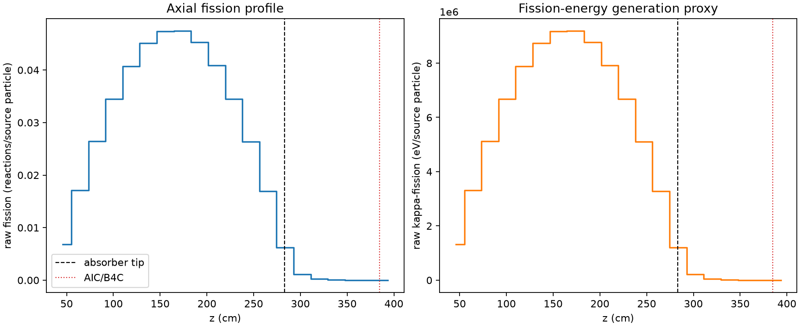
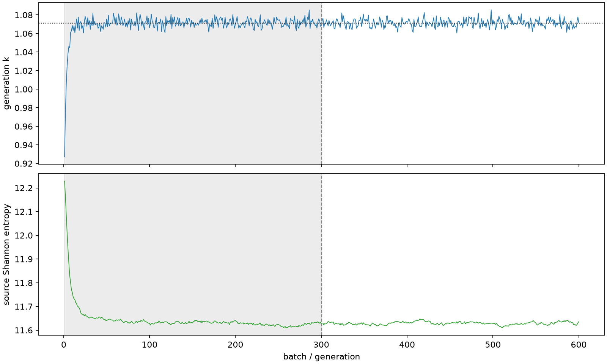

| field | value |
|---|---|
| experiment | V2-STAGE_32_OGRENCI_04-0002 |
| k | 1.0713294541693346 |
| MC standard error | 0.0001767028772426825 |
| seconds | 1514.413529628 |
| acceptance | not_assessed |
| convergence | review_required |
Completed is output integrity only; physical and statistical review required. Zero tallies do not prove zero production or zero uncertainty.
| diagnostic | value |
|---|---|
| geometric fuel voxels | 5280 |
| zero fission tally voxels | 46 |
| low signal fuel voxels | 828 |
| low signal fission share | 6.108841990283236e-05 |
| low signal kappa share | 6.111127744249844e-05 |
| important fission share | 0.9500619106857419 |
| previous filter included | 4452 |
| duration estimate s | 1562.5173488400023 |
| actual minus estimate s | -48.103819212002236 |
| fission relative MC error | statistics |
|---|---|
| all_geometric_fuel | {"voxels": 5280, "positive_mean_voxels": 5234, "zero_mean_voxels": 46, "undefined_relative_error_voxels": 46, "median": 0.010410444921118985, "p95": 0.689815360467824, "maximum": 1.0000000000000002} |
| low_signal | {"voxels": 828, "positive_mean_voxels": 782, "zero_mean_voxels": 46, "undefined_relative_error_voxels": 46, "median": 0.5297957670286209, "p95": 1.0, "maximum": 1.0000000000000002} |
| important_95pct | {"voxels": 3050, "positive_mean_voxels": 3050, "zero_mean_voxels": 0, "undefined_relative_error_voxels": 0, "median": 0.007797794778723978, "p95": 0.011600772643383965, "maximum": 0.013914936419127952} |
| outside_previous_filter | {"voxels": 828, "positive_mean_voxels": 782, "zero_mean_voxels": 46, "undefined_relative_error_voxels": 46, "median": 0.5297957670286209, "p95": 1.0, "maximum": 1.0000000000000002} |
| kappa_fission relative MC error | statistics |
|---|---|
| all_geometric_fuel | {"voxels": 5280, "positive_mean_voxels": 5234, "zero_mean_voxels": 46, "undefined_relative_error_voxels": 46, "median": 0.010396748666013159, "p95": 0.6894872601488795, "maximum": 1.0000000000000002} |
| low_signal | {"voxels": 828, "positive_mean_voxels": 782, "zero_mean_voxels": 46, "undefined_relative_error_voxels": 46, "median": 0.5296763665917822, "p95": 1.0, "maximum": 1.0000000000000002} |
| important_95pct | {"voxels": 3050, "positive_mean_voxels": 3050, "zero_mean_voxels": 0, "undefined_relative_error_voxels": 0, "median": 0.007788892861072982, "p95": 0.011586996794472835, "maximum": 0.013896689050563224} |
| outside_previous_filter | {"voxels": 828, "positive_mean_voxels": 782, "zero_mean_voxels": 46, "undefined_relative_error_voxels": 46, "median": 0.5296763665917822, "p95": 1.0, "maximum": 1.0000000000000002} |
| axial bin | fission share | kappa-fission share |
|---|---|---|
| 1 | 0.015591116271117462 | 0.015591909976061264 |
| 2 | 0.0391915587805069 | 0.03919143833947618 |
| 3 | 0.06047720790748081 | 0.060477006974773165 |
| 4 | 0.07881526880646994 | 0.0788147691737625 |
| 5 | 0.09320056418483501 | 0.09320019655152251 |
| 6 | 0.10317814227561403 | 0.1031779797898403 |
| 7 | 0.10839581809126742 | 0.10839564243108192 |
| 8 | 0.10847954025220875 | 0.10847922200301471 |
| 9 | 0.10354207043053977 | 0.1035414372502611 |
| 10 | 0.09350615950579694 | 0.09350552834081462 |
| 11 | 0.07890313619523744 | 0.07890265262154611 |
| 12 | 0.06035871368337751 | 0.060358460692176985 |
| 13 | 0.038740062370710385 | 0.03873981255835524 |
| 14 | 0.014190365763428841 | 0.014192147530452483 |
| 15 | 0.002648353068896065 | 0.0026495106651011316 |
| 16 | 0.000600665135478164 | 0.0006009410202016634 |
| 17 | 0.0001401855320686033 | 0.0001402557554735351 |
| 18 | 3.1563733470527494e-05 | 3.157934114936477e-05 |
| 19 | 8.12203013231926e-06 | 8.123411877539092e-06 |
| 20 | 1.3859813632309166e-06 | 1.3855730577670602e-06 |
Histories include the inactive-to-active transition at batch 300. kappa-fission approximates fission energy production, not total heat deposition.

